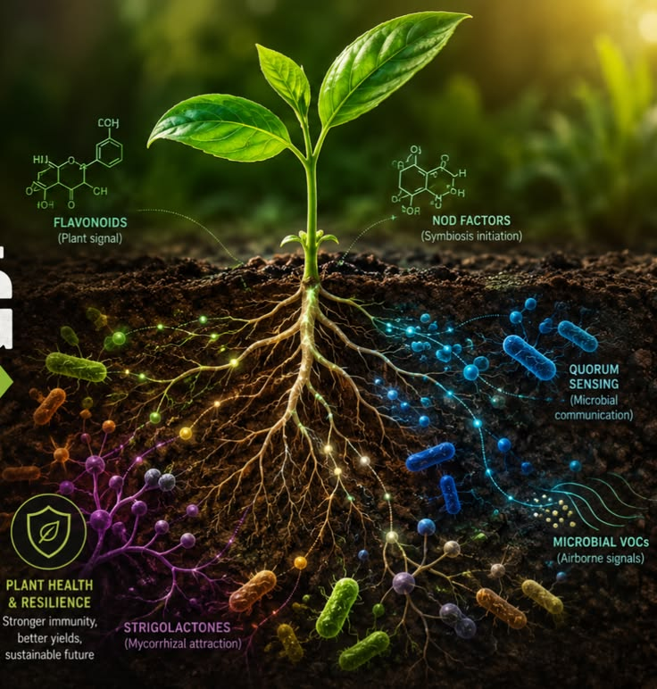
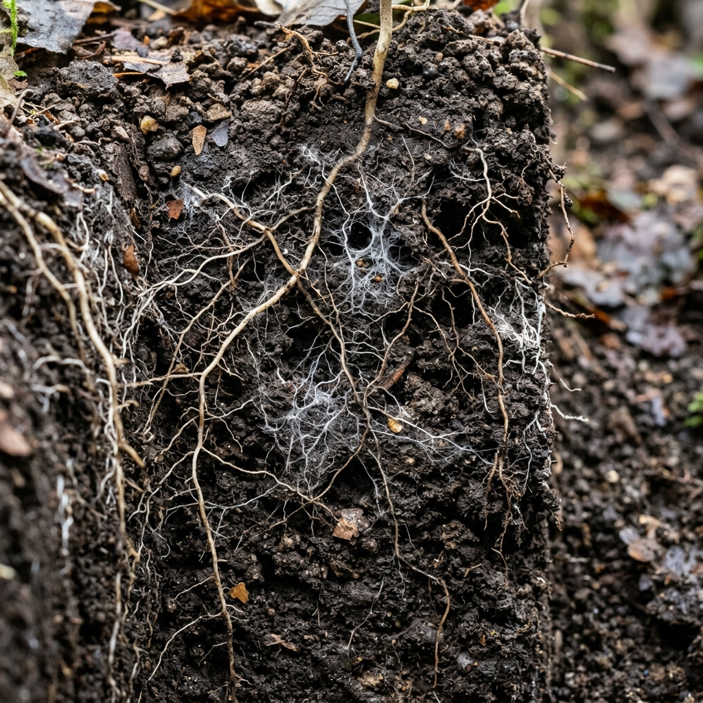
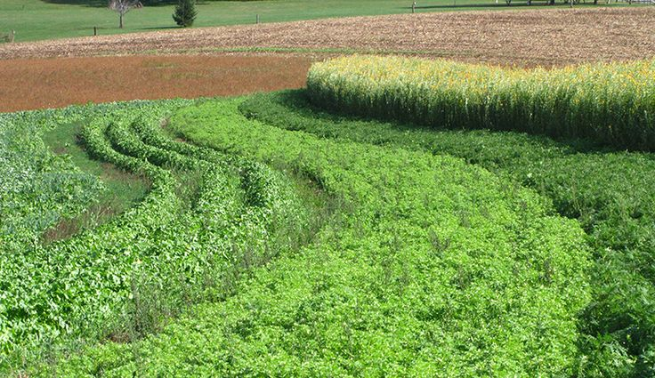
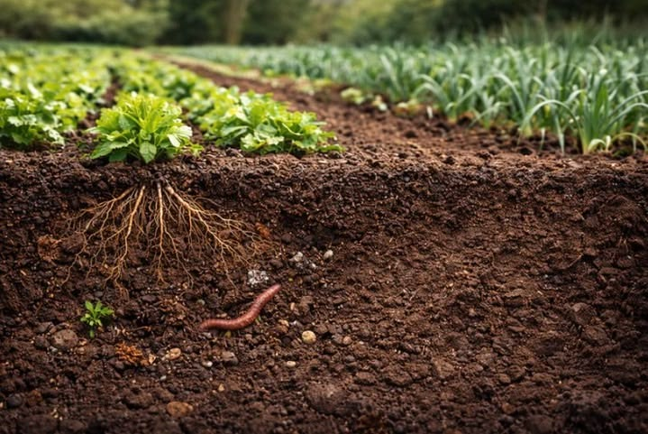
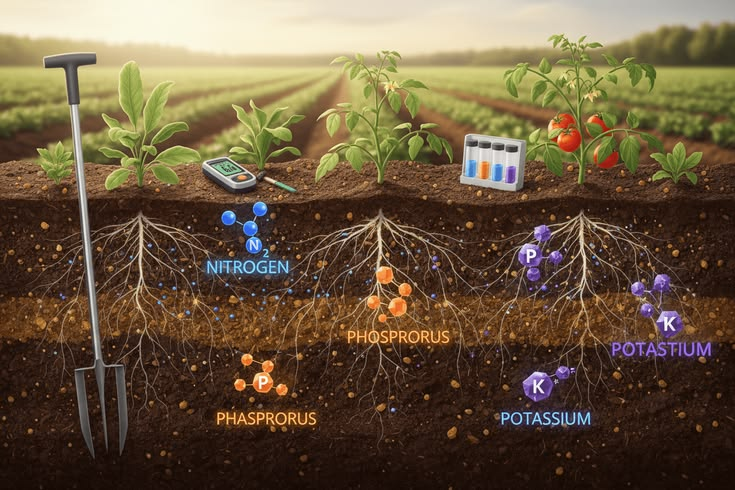
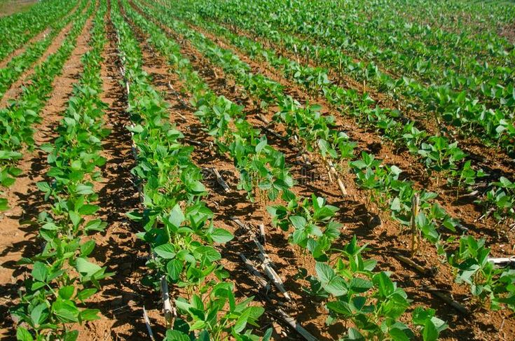
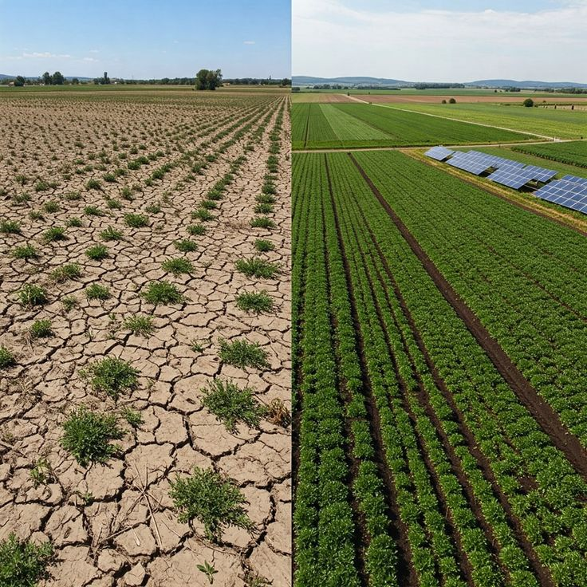
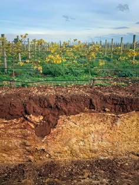
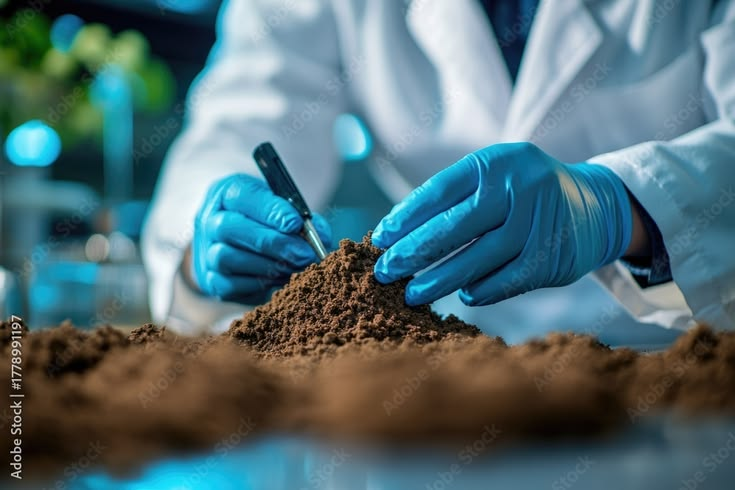

Phase 01Biological Inoculation
Rebuilding diverse soil food webs to liberate locked mineral phosphorus.
Restoring subterranean microbiomes and building drought-resilient soils with field-tested biology.

Balancing fungal hyphae and aerobic biology to unlock natural, self-sustaining fertility.
A methodical four-stage agronomic framework for commercial soil restoration.

Phase 01Rebuilding diverse soil food webs to liberate locked mineral phosphorus.

Phase 02Pumping liquid carbon exudates into the root zone without fallow periods.

Phase 03Preserving subterranean fungal networks and aggregate pore stability.

Phase 04Optimizing base saturation to facilitate natural capillary gas exchange.
Verified trial data comparing conventional dirt against living biological soils.


“Transitioning to biological extracts cut input costs by $140,000 in Year 1 while maintaining yields.”

Eliminating synthetic herbicides yielded higher brix levels and enhanced disease resistance.

Direct deep-core lab spectroscopy verifying stable humic and mineral carbon.